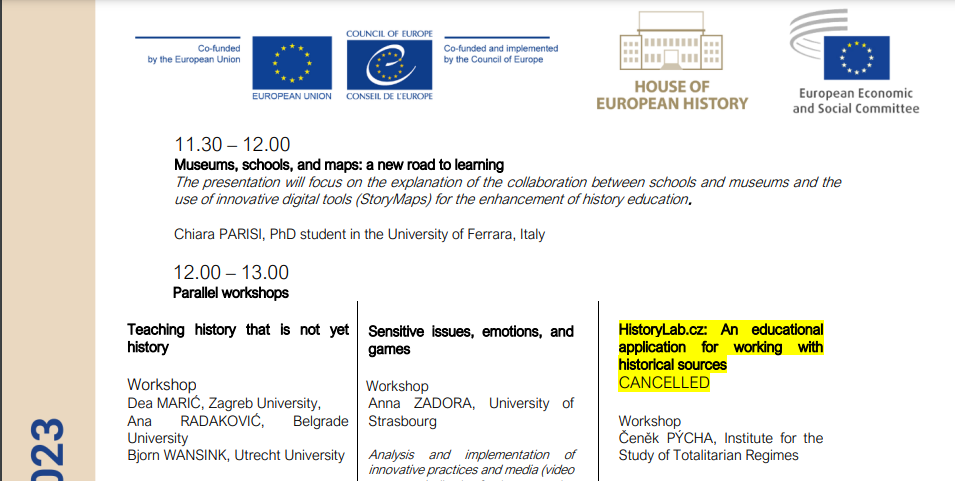
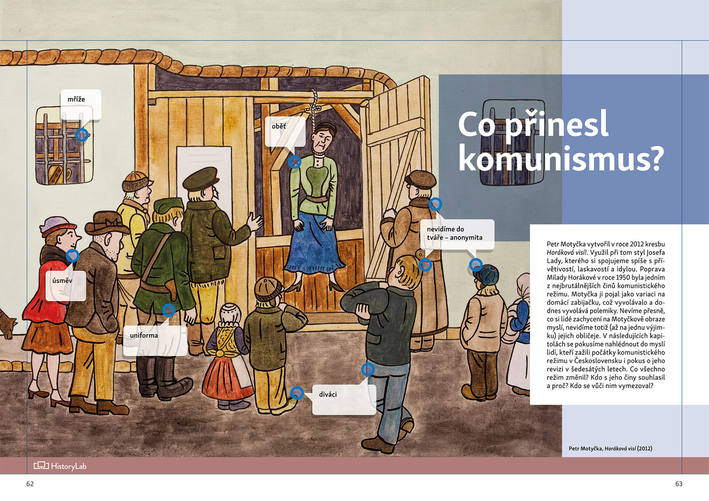
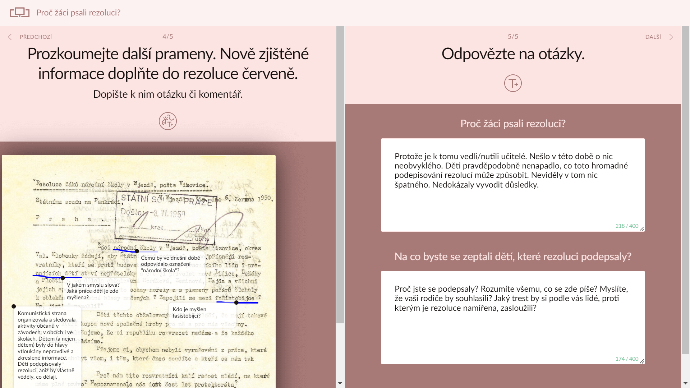

Zaměstnanci Oddělení vzdělávání ÚSTR podali výpovědi, ve své práci budou ale pokračovat.
Informujeme, že jsme jako pracovníci a pracovnice Oddělení vzdělávání Ústavu pro studium totalitních režimů podali hromadnou výpověď. Po patnácti letech práce na poli výuky soudobých dějin celý náš tým končí. V podpoře badatelské výuky však chceme pokračovat.
Vedení ÚSTR senátorům sdělilo, že nepovažuje vzdělávání za činnost, jež by naplňovala zákonem určenou roli instituce. V této situaci nejsme schopni zajistit fungování projektu Dějepis+. Využili jsme nabídku podpory ze strany MŠMT a domlouváme přesun (alespoň části) týmu na Národní pedagogický institut. Podporují nás i další instituce, s nimiž dlouhodobě spolupracujeme na poli historického vzdělávání. Motivuje nás snaha zachovat funkční tým a udržet v provozu vzdělávací pomůcky (jako je HistoryLab či badatelská učebnice Soudobé dějiny), jež jsou situací na ÚSTR přímo ohroženy. Věříme, že díky podpoře učitelů, historické obce a partnerských institucí se podaří tým i dlouhodobé výstupy udržet a že i projekt Dějepis+ bude pokračovat.
Děkujeme historikům a historičkám, kteří nám vyjádřili podporu v Prohlášení. Děkujeme stovkám učitelů a učitelek, kteří nás podpořili v Petici a často velmi konkrétně popsali, v čem je naše práce přínosná. Oceňujeme, že Výbor pro vzdělávání, vědu, kulturu, lidská práva a petice Senátu ČR ve svém Usnesení z 18. dubna posoudil petici učitelů jako důvodnou, upozornil na zásadní význam demokratického zkoumání dějin, apeloval na podporu vzdělávání a popularizace soudobých dějin a vyzval vedení ke zklidnění situace.
Krátce po zveřejnění senátního usnesení zaslali ředitel ÚSTR Ladislav Kudrna a jeho první náměstek Kamil Nedvědický institucionálně signované předžalobní výzvy většině pracovníků Oddělení vzdělávání. S odvoláním na právo na ochranu osobnosti požadují veřejnou omluvu za „hrubě urážlivé a nepravdivé výroky a nepřiměřeně kritické hodnotící soudy”, kterých jsme se údajně dopustili v naší Výzvě k zastavení destrukce vzdělávací činností ÚSTR z 15. března. Zvolený postup při zklidňování situace příkladně ilustruje naši zkušenost s vedením a atmosféru na instituci, kterou s lítostí po mnoha letech práce na konci června opustíme.
Zaměstnanci a zaměstnankyně Oddělení vzdělávání ÚSTR
Oddělení vzdělávání ÚSTR: Rada nechtěla vidět důkazy, vedení systematicky nemluví pravdu
Rada ÚSTR (dále jen Rada) se ve svém usnesení nevyjadřuje k našemu dopisu a ani si od nás pro své jednání nevyžádala žádné podklady. Vzhledem k tomu, že jednání Rady bylo neveřejné, nikdo ze signatářů se jednání nemohl zúčastnit, a doložit tak naše obavy. Nebyli jsme k tomu ani vyzváni, takže Rada se mohla seznámit jen s jednostrannou prezentací stávajícího vedení, ze které potom ve svém usnesení vycházela. Abychom doložili svá tvrzení o podezření z bossingu ad. nás totiž vyzvalo pouze vedení.
Tvrdí-li potom Rada, že právě toto byl její pokus získat od oddělení informace, uvádí tím veřejnost v omyl. Opravdu nechala Rada sběr důkazů o podezření z bossingu a cenzury pouze na řediteli, který podle celého oddělení onu cenzuru a bossing buď inicioval, prováděl anebo schvaloval? Schůzku s předsedou Rady Eduardem Stehlíkem jsme přitom neodmítli, naopak jsme se ji pokoušeli iniciovat s předstihem před zveřejněním naší výzvy.
Ředitel Kudrna opakovaně neuvádí pravdivá tvrzení a zkresluje situaci, viz Závěrečné stanovisko vedení ÚSTR:
- „Není pravda, že oddělení vzdělávání nemohlo prezentovat pomůcku HistoryLab v Bruselu. Na místo odvolaného vedoucího [...] byl vedením Ústavu vyslán jiný zástupce zaměstnavatele, a to také zaměstnanec daného oddělení, o čemž existuje písemná dokumentace.” Písemná dokumentace k tomu ale existovat nemůže, protože „jiný zástupce”, konkrétně Vojtěch Ripka, se v Bruselu účastnil úplně jiné akce (History Education in the Digital Age) a jeho pracovní cesta nebyla schválena s cílem nahradit Čeňka Pýchu (European Innovation Days in History Education). Vinou odvolání Č. Pýchy byl příspěvek na konferenci zrušen, jak je zjevné z programu.

- Tvrzení, že vedení Ústavu pro studium totalitních režimů „nebrání distribuci ani propagaci knihy 13 objektů z (ne)šťastného muzea,” neříká celou pravdu. Kniha 13 objektů z (ne)šťastného muzea rozhodně nebyla standardně distribuována. Máme doklady usvědčující vedení ze zákazu propagace a distribuce knihy. Aktuální podoba její distribuce je důsledkem veřejného nátlaku. Jsme si jisti, že kdybychom se neozvali, je distribuce knihy blokována dodnes.
- Není pravdou, že jsme podezření na bossing v Oddělení vzdělávání nejprve neřešili interně. Čeněk Pýcha se opakovaně obracel na své nadřízené ohledně nespokojenosti s komunikačním stylem vedení, písemně i před svědky. Na opakované snahy o diskuzi reagovalo vedení represivně jeho odvoláním. S koncepčním směřováním ředitele stran vzdělávání nebyli zaměstnanci oddělení seznámeni doteď, ale to vedení nebránilo vyjadřovat se s nedůvěrou nebo hanlivě za zády zaměstnanců k jejich dosavadní činnosti. Tato kritika se k Oddělení vzdělávání dostávala jen neoficiálními kanály a vedla k toxickému prostředí na pracovišti.
Opravdu si vedení ÚSTR myslí, že může 19 lidí – celé oddělení –, kteří za sebou mají patnáctiletý odborný kredit práce pro Ústav i další instituce, obviňovat opakovaně ze lží? Znovu opakujeme, že všechna svá tvrzení můžeme na vyžádání doložit dalšími důkazy a vyvrátit nepravdy, které jsou o nás prezentovány.
Zaměstnanci Oddělení vzdělávání ÚSTR
Kritizovaná učebnice neuráží Miladu Horákovou. Ukazuje, jak učit dějepis moderně.
Zastánci současného vedení ÚSTR se usilovně snaží znedůvěryhodnit výzvu Oddělení vzdělávání tvrzením, že se vzdělávací činnost v uplynulých letech odchýlila od zákonného rámce činnosti ústavu. Nezbývá než trpělivě vysvětlovat, proč je naše dosavadní práce v souladu nejen se zřizovacím zákonem a platnou vzdělávací koncepcí ÚSTR, ale také s cíli státní vzdělávací politiky formulovanými v rámcových vzdělávacích programech.
O čem je badatelská učebnice Soudobé dějiny 9?
Do pozornosti médií a veřejně činných osobností se dostala i učebnice Soudobé dějiny 9 od Nakladatelství Fraus, na které se autorsky podíleli pracovníci Oddělení vzdělávání ÚSTR. Rádi bychom zde uvedli na pravou míru některé nepřesnosti či vyložené manipulace, které jsou s ní ve veřejném prostoru spojovány, ilustrativně v rozhovoru Daniela Takáče s bývalým ředitelem ÚSTR a poslancem Pavlem Žáčkem (ODS) v České televizi 17. března 2023.
V první řadě je třeba říct, jak učebnice vznikala: není sólovým projektem zaměstnanců Oddělení vzdělávání ÚSTR, ale výsledkem koncepční a redakční spolupráce s Nakladatelstvím Fraus. Prošla, jak stanovuje zákonná povinnost, standardním recenzním řízením, tedy kritikou ze strany respektovaných osobností, které se jednotlivými tématy zabývají. Učebnici takto odborně garantuje 19 historiků a historiček z pracovišť po celé republice, pedagogických odborníků a odbornic a dalších specialistů. Ti ve společném dopisu Radě ÚSTR z 15. března 2023 sami vyjádřili znepokojení nad tím, jak vedení ÚSTR postupuje vůči Oddělení vzdělávání a učebnici, jejíž vznik odborně garantovali:
„Učebnice od svého vydání zaznamenala prestižní zahraniční ocenění, pozitivní ohlasy od učitelské i odborné veřejnosti a v neposlední řadě také ohlasy v médiích. Jakožto odborní konzultanti proto rázně odmítáme jakékoliv blíže nekonkretizované výroky o ‚nepravdivých‘ a ‚neetických‘ tvrzeních, jež by učebnice měla údajně obsahovat.”
Učebnici rovněž na základě vlastních odborných posudků akreditovalo Ministerstvo školství, mládeže a tělovýchovy.
Do diskuzí se pak dostalo zejména vyobrazení popravy Milady Horákové. Obraz „Horáková visí” od Petra Motyčky z roku 2012 nelze manipulativně vytrhávat z kontextu celé učebnice: uvozuje blok kapitol nazvaný Co přinesl komunismus?, obsahující osm stránek učebnice, doplněný je 11 stránkami pracovního sešitu a 12 stránkami komentáře v příručce pro učitele.

V rámci tohoto bloku je Miladě Horákové mj. věnováno samostatné cvičení, řešené v aplikaci HistoryLab, s názvem Proč žáci psali rezoluci? Cvičení má aktuálně 1731 uložených výsledků – což je součet jednotlivců, skupin i celých tříd, které s ním pracovali. Žáci v něm prostřednictvím analýzy žákovské rezoluce a dalších dobových dokumentů nahlížejí perspektivou tehdejších školních dětí propagandistickou kampaň politického procesu. Přitom se učí rozpoznávat ideologický jazyk a zasazují rezoluci do dobového kontextu. Výsledky jejich práce v aplikaci HistoryLab, při které se snaží porozumět možným postojům dětí-signatářů rezoluce, pak mohou vypadat například takto:

Učebnice prostřednictvím práce s dětskými rezolucemi nabízí žákům příležitost, aby porozuměli mechanismům politických procesů v totalitní společnosti. Tvrdit, že v učebnici se jedná o „dehonestaci” Milady Horákové a její památky nebo o „politické zpochybňování procesu vyrovnávání se s minulostí”, není ani při nejlepší vůli možné. Dílo samotné je doplněno následujícím komentářem: „Poprava Milady Horákové v roce 1950 byla jedním z nejbrutálnějších činů komunistického režimu,” a pokračuje: „Nevíme přesně, co si lidé zachycení na Motyčkově obraze myslí, nevidíme totiž (až na jednu výjimku) jejich obličeje. V následujících kapitolách se pokusíme nahlédnout do myslí lidí, kteří zažili počátky komunistického režimu v Československu i pokus o jeho revizi v šedesátých letech.” Stejně tak se explicitně zmiňuje, že se jedná o obraz s problematickým významem: „Motyčka [popravu Horákové] pojal jako variaci na domácí zabijačku, což vyvolávalo a dodnes vyvolává polemiky.”
Autorský tým vybral osobnost Milady Horákové a její tragickou smrt jako symbol pro celou éru 50. let v Československu. Rozhodl se pro použití uměleckého díla, a nikoliv např. fotografie, z několika důvodů:
1) Tematické bloky kapitol vždy uvozují umělecká díla, která mají schopnost upoutat pozornost a vzbuzují otázky. Motivují tedy žáky a žákyně k tomu, aby se o minulost vůbec zajímali. Zkušenost s učebnicí ukazuje, že díla dokáží historii představit jako živé téma pro současnost. Žáci a žákyně si díky kontroverznímu dílu uvědomí, že historie i dnes vzbuzuje emoce a podněcuje diskuze. Srovnejme tento přístup s faktografickým výkladem politických procesů od tabule. Pokud je Milada Horáková představena jako živé téma a žáci a žákyně mají příležitost formulovat vlastní otázky, zůstane v nich její příběh trvale. U výkladu hrozí, že se fakta po ověření testem vytratí z paměti.
Právě kontroverze, tedy vědomí toho, že demokratická společnost se nevztahuje k minulosti jednotně, ale na rozdíl od autoritářských režimů pluralitně a často skrze protichůdné pohledy, je důležitým principem moderní didaktiky dějepisu a občanského vzdělávání. I proto se princip kontroverze vtělil do Koncepce vzdělávací činnosti a popularizace ÚSTR, která byla schválena Radou ÚSTR v roce 2016. Koncepcí byla konkretizována obecná formulace § 4 zákona č.181/2007 Sb., zřizujícího ÚSTR a ABS:
„Pro vzdělávání a popularizaci v tématech, jež mohou být politicky citlivá, je klíčové dodržování těchto pravidel (jde o základní principy občanského vzdělávání): vyučující nesmí indoktrinovat, tedy manipulovat tématem v zájmu vlastního přesvědčení; podpora samostatného kritického myšlení, nikoli snaha získat někoho pro svůj názor; nutnost pojednávat kontroverzní témata jako kontroverzní, včetně prezentování názorů všech relevantních stran účastnících se polemiky.”
2) Motyčkův obraz umožňuje žákům a žákyním učit se interpretovat umělecká díla. Umění představuje rozšířený a funkční způsob vztahování se k minulosti, jak dokládá množství intervencí ve veřejném prostoru. Kupříkladu na známých dílech Davida Černého lze modelově ukázat, jak je umění schopno zprostředkovat náročná historická témata a otevřít je debatě. Obdobně je koncipována role uměleckých děl v učebnici. Umění využívá specifické výrazové formy a žáci a žákyně by si měli osvojovat strategie, jak umění poučeně interpretovat. I proto je Motyčkův obraz upraven digitálními nástroji z aplikace HistoryLab (kreslení, komentování), které zaměřují pozornost žáků a žákyň na významové prvky obrazu.
3) Dílo rozvíjí porozumění etické dimenzi historie, což je jeden ze základních principů historického myšlení. Pro hodnotovou výchovu žáků ve školách je nezbytné, aby žáci a žákyně byli vystaveni situacím, kdy jsou v sázce morální hodnoty. Motyčkův obraz upozorňuje na aspekty vyrovnávání se české společnosti s komunismem tím, že je v něm jedna z nejbrutálnějších justičních vražd 50. let zasazena do idylického prostředí Ladovy vesnice. Tato konstelace přirozeně generuje otázky: Jak běžní lidé reagovali na represe 50. let? Proč k nim docházelo? Co si mohli myslet? Jak jejich jednání posuzovat dnes a jak na něj reagovat? Učebnice tímto metodickým přístupem naplňuje zcela v duchu současného Rámcového vzdělávacího programu pro základní školy cílové zaměření dějepisu: „Žáci jsou vedeni k poznání, že historie není jen uzavřenou minulostí ani shlukem faktů a definitivních závěrů, ale je kladením otázek, jimiž se současnost prostřednictvím minulosti ptá po svém vlastním charakteru a své možné budoucnosti.” (RVP ZV, s. 56). S využitím pestré skladby pramenů mohou v následujících kapitolách na řadu relevantních otázek žáci hledat s učiteli odpovědi.
Jako autorský tým učebnice si stojíme za tím, že badatelská učebnice Soudobé dějiny 9 není pokusem o relativizaci hodnotových soudů. Naopak nabízí promyšlené postupy, jak může být poučení z dějin tematizováno v hodinách dějepisu. Učebnice a badatelská metoda, kterou jako první systematicky rozpracoval autorský tým pro použití na školách, sloužily jako východisko Ministerstvu školství, mládeže a tělovýchovy a Národnímu pedagogickému institutu pro přípravu projektu Dějepis+.
Kritika učebnice, která doposud ve veřejném prostoru zazněla, poukazuje spíš na nekompetenci kritiků vyjadřovat se k historickému vzdělávání a základním principům jeho inovace. Tento svůj hendikep pak dohánějí výroky o ideových sporech v historické obci nebo o domnělé politické agendě, kterou má učebnice podsouvat – mluví z nich ale především nepochopení stávajících trendů v didaktice dějepisu. Kvality učebnice dokládá i ocenění na Frankfurtském knižním veletrhu stříbrnou medailí BELMA – Best European Learning Materials Awards.
Petici na podporu Oddělení vzdělávání ÚSTR za necelé tři dny podepsalo přes 600 lidí, silně zastoupení jsou především vyučující dějepisu. Rozsah podpory i osobní komentáře signatářů a signatářek dokládají, že právě badatelský a kritický přístup k výuce minulosti, reprezentovaný dosavadní činností Oddělení vzdělávání ÚSTR a jeho partnerských institucí, naplňuje představy mnoha učitelů a učitelek o tom, jak by měla výuka soudobých dějin vypadat.
Autorský tým učebnice Soudobé dějiny 9 a současně signatáři Výzvy k zastavení destrukce vzdělávací činnosti Ústavu pro studium totalitních režimů
Trváme na znění Výzvy v jejím plném rozsahu
Otevřená výzva Radě Ústavu pro studium totalitních režimů vyvolala vlnu zájmu i mediální pozornosti. K jejímu zveřejnění nás vedly obavy o schopnost oddělení zajistit plnění cílů, k nimž bylo zřízeno, a hrozící i již nastalé škody, k nimž došlo po řadě problematických rozhodnutí ředitele ÚSTR Ladislava Kudrny a jeho náměstka Kamila Nedvědického. Stávající vedení na naši výzvu posléze na stránkách Ústavu reagovalo tiskovou zprávou, v níž naše tvrzení zpochybňuje, a to přestože byla určena Radě ÚSTR. Jestliže vedení po uveřejnění naší výzvy tvrdí, že má jít kniha 13 objektů z (ne)šťastného muzea konečně do distribuce (například prodejce Kosmas její zařazení do prodeje zatím podle našich dostupných informací zpochybňuje), jsme za to rádi. Ale to, že se tak děje až po zveřejnění našich obav, rozhodně nepovažujeme za standardní akademickou ani profesní praxi.
Nepřekvapilo nás, že Ladislav Kudrna a Kamil Nedvědický popírají tvrzení v naší výzvě. Vnímáme to jako pokus vedení zastrašit nás a znejistit všechny, kteří se nás rozhodli ve veřejném prostoru podpořit.
Naším cílem není posílat si vzkazy přes média – ostatně kdyby vedení zvolilo jiný styl komunikace, nemuseli jsme se k psaní výzvy vůbec uchylovat. Chceme řešit skutečné problémy, které v ÚSTR nastaly, ať už se jedná o ohrožení rozvoje moderního dějepisného vzdělávání v ČR, podezření na bossing stran vedení, cenzurní praktiky nebo nehospodárnost. Stojíme si za obsahem Výzvy v jejím plném znění a můžeme pouze zopakovat, že všechny uvedené skutečnosti a tvrzení jsme schopni Radě doložit a obhájit je na jejím nejbližším zasedání 22. března.
Signatáři Výzvy